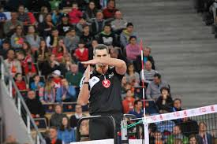

1.- El voleibol es un deporte colectivo que puede jugarse en campos interiores, al aire libre e incluso en la playa (modalidad conocida como vóley playa).
2.- El terreno de juego es un campo rectangular de 18m x 9m dividido en dos partes del mismo tamaño por una línea central. Está rodeado por una zona libre de mínimo 3m de ancho en todos los lados que sobresale al área de juego.
3.- A tres metros de la línea central se sitúa la línea de ataque que delimita la zona ofensiva.
4.- La redes de voleibol es variable en altura. Para competiciones masculinas mide 2’43m y para competiciones femeninas 2’24m. En la parte superior de los postes se encuentran dos varillas o antenas que sobresalen 0’80m y delimitan la zona por donde ha de pasar el balón.
5.- El balón es esférico y flexible, con 65-67 cm de circunferencia y 260-280 g de peso.
6.- Durante el juego el balón tiene que ser golpeado continuamente, no puede ser retenido ni tomado por ningún jugador.
7.- El juego consta de dos equipos y cada equipo está formado por seis jugadores en el terreno de juego y un máximo de hasta seis suplentes.
8.- El contacto de los jugadores con el suelo es continuo, por lo que habitualmente utilizan protecciones en las articulaciones. La superficie no puede ser rugosa ni deslizante
1.- Los jugadores no pueden meterse en el campo del equipo adversario ni tocar la red.
2.- El partido está formado por tres, cuatro o cinco sets. Un equipo gana un set cuando alcanza o supera los 25 punto con una ventaja de dos. Cuando gane tres sets y en cada set gane al otro equipo por dos puntos habrá ganado el partido.
3.- Los jugadores tienen que evitar que el balón toque el suelo dentro de su campo, ya que será punto para el equipo contrario.
4.- Antes de empezar cada set, los dos equipos deben dar el orden de rotación. Los jugadores tienen que ir rotando sus posiciones a medida que van consiguiendo puntos.
5.- Antes de empezar el partido, los campos se sortean y en cada ser se produce un cambio de campo, así como lo mismo con el saque inicial.
6.- Cada equipo puede solicitar hasta dos tiempos de descanso o tiempos muertos de 30 segundos en cada set. Los tiene que pedir el entrenador o, si no estuviera, el capitán del equipo.
7.- Para que el partido se desarrolle con total normalidad y sin incidentes, tiene que haber un equipo arbitral formado por un primer árbitro, un segundo árbitro, un anotador, un anotador asistente y dos o tres jueces de línea. Sí que es cierto que es el primer árbitro el que tiene todo el poder de decisión sobre cualquier jugada.
